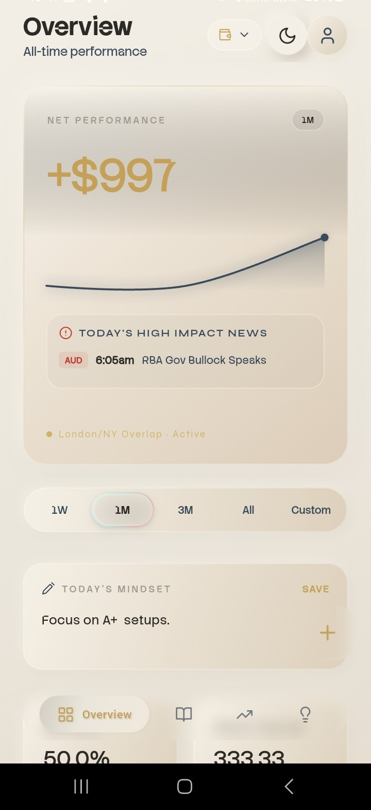
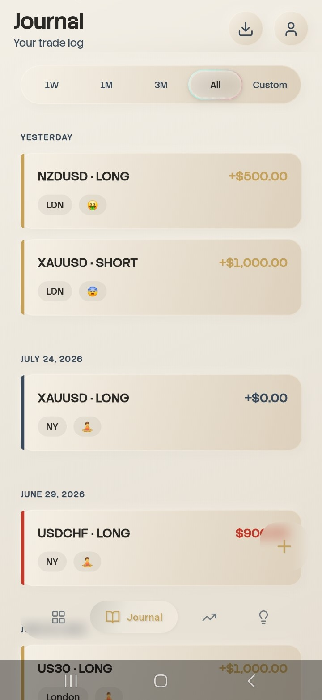
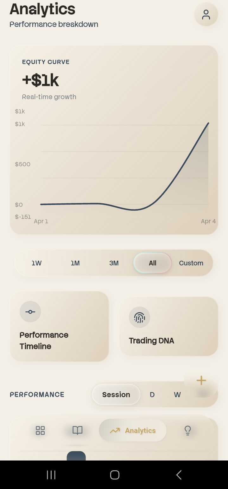
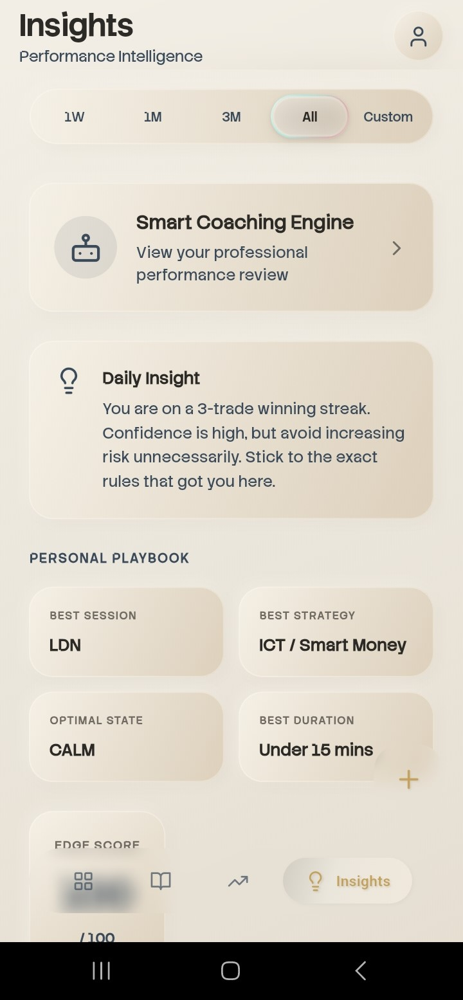

What happened
in the market.
Log setups, P&L, sessions, and mistakes with the same calm rhythm you use in the app—structured enough to review, quiet enough to think.
Trading journal · Psychology · Insights
You're not losing because you lack data. You're losing because you can't see the patterns. Tidetic helps traders uncover the emotional and behavioral patterns hidden inside their trading history. Log your trades, track your mindset, and let Tidetic analyze what happens beneath the surface. Discover which emotions lead to your best performance, identify discipline leaks before they become costly mistakes, and build a data-driven understanding of yourself as a trader. At a fraction of the cost of competing platforms, allowing you to keep more capital where it belongs, in your trading account
Android · Start your 14-day free trial
Tidetic
Log setups, P&L, sessions, and mistakes with the same calm rhythm you use in the app—structured enough to review, quiet enough to think.
Record mood, focus, and impulse by hand. Tidetic does not auto-fill your psychology—the pause is part of the practice.
Insights emerge where the two timelines meet—not from automation that skips the pause.
Intentional friction
Manual journaling is not a limitation. It is the habit—slow enough to notice when you are trading from fear, fast enough to stay honest after the bell.
You write. You reflect. Tidetic analyses your trade history together with the states you chose to record, surfacing compliance, mistakes, and patterns when there is something real to see.
Inside the app




Built for serious journaling
Pricing
All prices in Kenyan Shillings. Subscribe inside the app after you install Tidetic on Android.
Monthly
KES 250
per month
Best value
Yearly
KES 2,200
per year